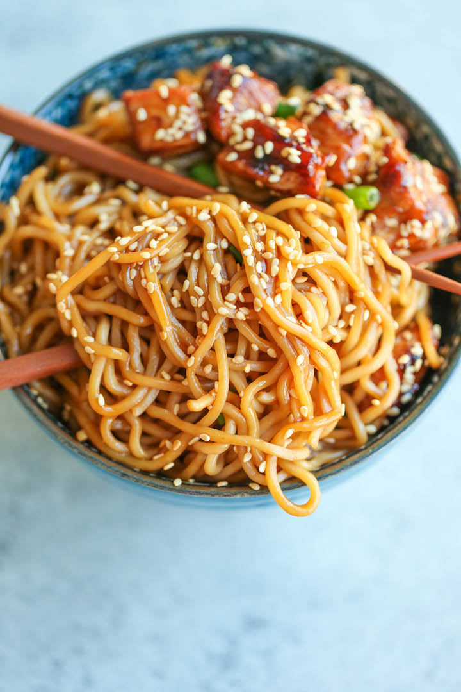

Teriyaki Chicken Noodles

Ingredients
-
2 (5.6-ounce) packages refrigerated Yaki-Soba, seasoning sauce packets
discarded*
- 1 tablespoon cornstarch
- 1/3 cup reduced sodium soy sauce
- 1/4 cup brown sugar, packed
- 3 cloves garlic, minced
- 1 tablespoon freshly grated ginger
- 2 tablespoons honey
-
1 pound boneless, skinless chicken thighs, cut into 1-inch chunks
- 1 tablespoon olive oil
- 1 teaspoon sesame seeds
- 1 green onion, thinly sliced
Preparation Time
1 hour 10 mins
Instructions
-
In a large pot of boiling water, add Yaki-Soba until loosened, about
1-2 minutes; drain well.
-
In a small bowl, whisk together cornstarch and 1/4 cup water; set
aside.
-
In a small saucepan over medium heat, add soy sauce, brown sugar,
garlic, ginger, honey and 1 cup water; bring to a simmer. Stir in
cornstarch mixture until thickened enough to coat the back of a spoon,
about 2 minutes; let cool to room temperature. Reserve 1/4 cup and set
aside.
-
In a gallon size Ziploc bag or large bowl, combine soy sauce mixture
and chicken; marinate for at least 30 minutes to overnight, turning
the bag occasionally. Drain the chicken from the marinade.
-
Heat olive oil in a large skillet over medium heat. Add chicken and
cook until golden brown and cooked through, about 3-4 minutes; set
aside.
-
Stir in Yaki-Soba and 1/4 cup reserved soy sauce mixture until well
combined, about 2 minutes.
-
immediately, garnished with sesame seeds and green onion, if desired.